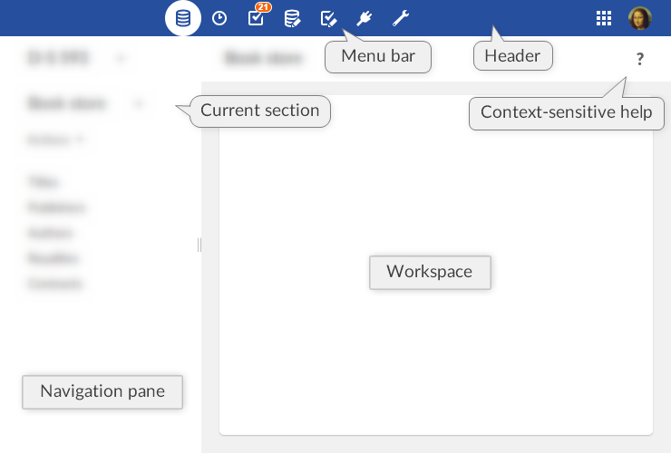
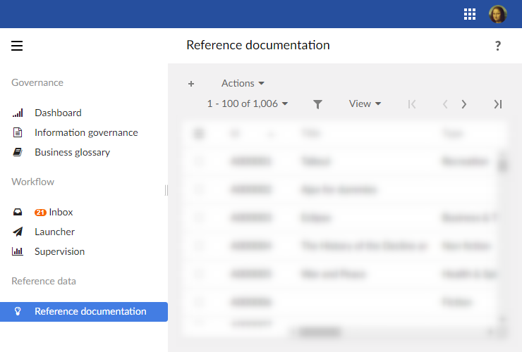
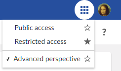
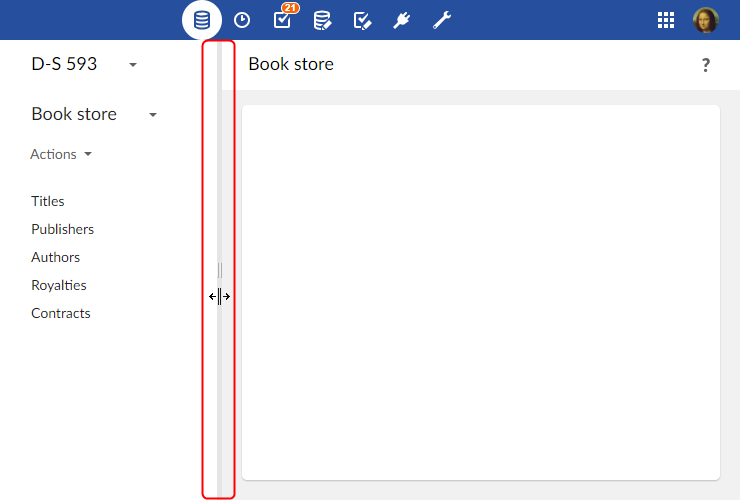
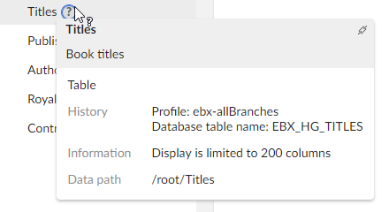
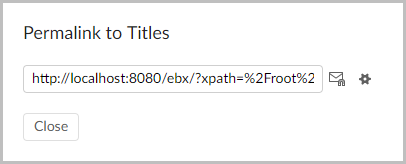

Using the user interface
Overview
The general layout of TIBCO EBX® workspaces is entirely customizable by a perspective administrator.
If several customized perspectives have been created, the tiles icon 'Select perspective' allows the user to switch between available perspectives.
The advanced perspective is accessible by default.
See also
Advanced perspective
By default, the EBX® advanced perspective is available to all users, but its access can be restricted to selected profiles. The view is separated into several general areas, referred to as the following in the documentation:
Note
The advanced perspective is still accessible to users through explicit selection (for example through a Web component). Unlike other perspectives, it can only be "hidden" in the user interface so that users cannot apply it themselves.
Header: Displays the avatar of the user currently logged in and the perspective selector. Clicking on the user's avatar gives access to the user pane.
Menu bar: The functional categories accessible to the current user.
Navigation pane: Displays context-dependent navigation options. For example: selecting a table in a dataset, or a work item in a workflow.
Workspace: Main context-dependent work area of the interface. For example, the table selected in the navigation pane is displayed in the workspace, or the current work item is executed in the workspace.
The following functional areas are displayed according to the permissions of the current user: Data, Dataspaces, Modeling, Data Workflow, Data Services, and Administration.

Perspectives
The EBX® perspectives are highly configurable views with a target audience. Perspectives offer a simplified user interface to business users and can be assigned to one or more profiles. This view is split into several general areas, referred to as the following in the documentation:
Header: Displays the avatar of the user currently logged in and the perspective selector (when more than one perspective is available). Clicking on the user's avatar gives access to the user pane.
Navigation pane: Displays the hierarchical menu as configured by the perspective administrator. It can be expanded or collapsed to access relevant entities and services related to the user's activity.
Workspace: Main context-dependent work area of the interface.
Perspectives are configured by authorized users. For more information on how to configure a perspective, see perspective administration.
Example of a hierarchical menu:

Favorite perspectives
When more than one perspective is available to a user, it is possible to define one as their favorite perspective so that, when logging in, this perspective will be applied by default. To do so, an icon is available in the perspective selector next to each perspective:
A full star indicates the favorite perspective. A click on it will remove the favorite perspective.
An empty star indicates that the associated perspective is not the favorite one. A click on it will set this perspective as the favorite one.

See also
User pane
General EBX® features are grouped in the user pane. It can be accessed by clicking on the avatar (or user's initials) in the upper right corner of any page.
The user pane is then displayed with the user avatar and gives access to the profile configuration (according to the user's rights), language selection, density selection and online documentation.
Attention
The logout button is located on the user pane.
Avatar
An avatar can be defined for each user. The avatar consists in a picture, defined using a URL path; or in two letters (the user's initials by default). The background color is set automatically and cannot be modified. Regarding the image that will be used, it has to be a square format but there is no size limitation.
Note
Avatars appear in the user pane, history and workflow interfaces.
The feature is also available through the Java method UIComponentWriter.addUserAvatar.
The avatar layout can be customized in the 'Ergonomics and layout' section of the 'Administration' area. It is possible to choose between the display of the avatar only, user name only, or to display both.
Density
Users can now choose their display density mode between 'Compact' and 'Comfortable'. The display mode can be modified from the user pane.
User interface features
Resetting the navigation pane width
After having resized the width of the navigation pane, you can restore it to the default width by hovering over the border and double-clicking.

Where to find EBX® help
In addition to the full standalone product documentation accessible via the user pane, help is accessible in various forms within the interface.
Context-sensitive help
When browsing any workspace in EBX®, context-specific help is available by clicking on the question mark located to the right side of the second header. The corresponding chapter from the product documentation will be displayed.
Contextual help on elements
When you hover over an element for which contextual help has been defined, a question mark appears. Clicking on the question mark opens a panel with information on the element.

When a permalink to the element is available, a link button appears in the upper right corner of the panel.

 User guide table of contents
User guide table of contents